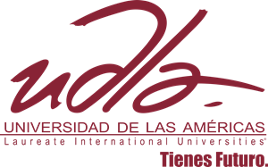
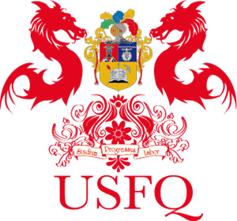

Universidades Del Ecuador
Universidades Del Ecuador
|Publicas|
|Aplica a una!|
| Universidad | Informacion |
|---|---|

|
Ubicacion: Av. 12 de octubre y Vicente Ramón Roca Quito, Pichincha, Ecuador Informacion: La Pontificia Universidad Católica del Ecuador (PUCE) es una institución de educación superior y también la universidad privada más antigua de la República del Ecuador.2 Fundada en 1946 por la Compañía de Jesús y por el Sr. Arzobispo de Quito, Card. Carlos María de la Torre. El catedrático P. Aurelio Espinosa Pólit, S.J. fue cofundador y su primer rector. La primera facultad en funcionar fue la de Jurisprudencia; su primer decano fue el diplomático y Canciller de la República, Julio Tobar Donoso. |
|  |
Ubicacion: De Los Colimes esq, Quito 170513 Informacion: A partir de su creación en el año 1994, la Universidad de Las Américas (UDLA) ha incorporado gradualmente a su oferta académica una serie de carreras de pregrado que han sido ajustadas a las necesidades que el país requiere en sus diferentes ámbitos económicos y sociales. Con esta misión, poco a poco se crearon distintas facultades y escuelas, de acuerdo al siguiente orden de creación: Ciencias Económicas y Administrativas, Arquitectura y Diseño, Comunicación y Artes Audiovisuales, Derecho, Ciencias Políticas y Relaciones Internacionales, Ingeniería y Ciencias Aplicadas. Posteriormente se crearon: Hospitalidad y Turismo, Salud, Odontología, Medicina, Educación, Música, Psicología, Gastronomía y la Facultad de Formación General. |
|  |
Ubicacion: Campus Cumbayá, Diego de Robles s/n, Quito 170901 Informacion: La Universidad San Francisco de Quito USFQ fue fundada en 1988 por Santiago Gangotena a través de la Corporación de Promoción Universitaria. Fue oficialmente reconocida por el Ministerio de Educación y Cultura del Ecuador en octubre de 1995 y acreditada por el CONESUP en mayo de 2001. |